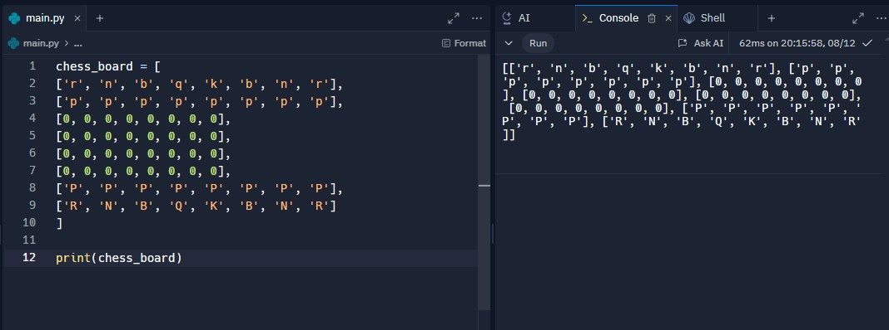
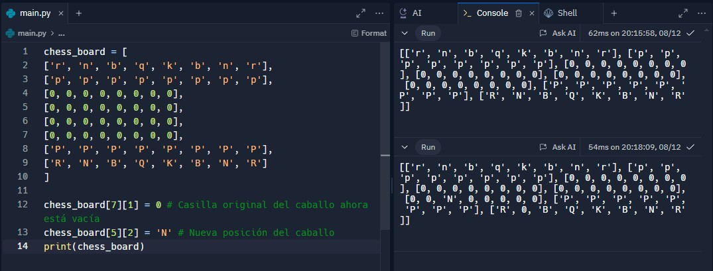
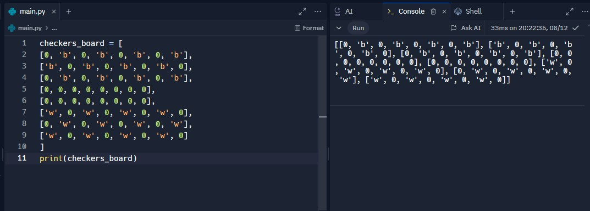
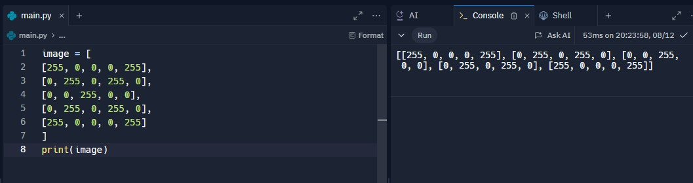

Campista Brian Steven Valencia Ulchur
Un tablero de ajedrez es una matriz de 8x8. En vez de representar solo las casillas
blancas y negras, podemos representar las piezas de ajedrez. Usaremos letras
para representar las piezas: P para peón, R para torre, N para caballo
(knight), B para alfil, Q para reina y K para rey. Las piezas negras se representan
con letras minúsculas y las blancas con letras mayúsculas.

En este ejemplo, el 0 representa una casilla vacía.
Movimiento de un Caballo

Un tablero de damas también es una matriz de 8x8, pero además de las casillas
alternas, debemos representar las piezas de los dos jugadores.

En esta matriz, el 255 representa píxeles blancos y el 0 representa píxeles negros.
Este patrón podría visualizarse como una “X” blanca sobre un fondo negro si se
dibujara.
